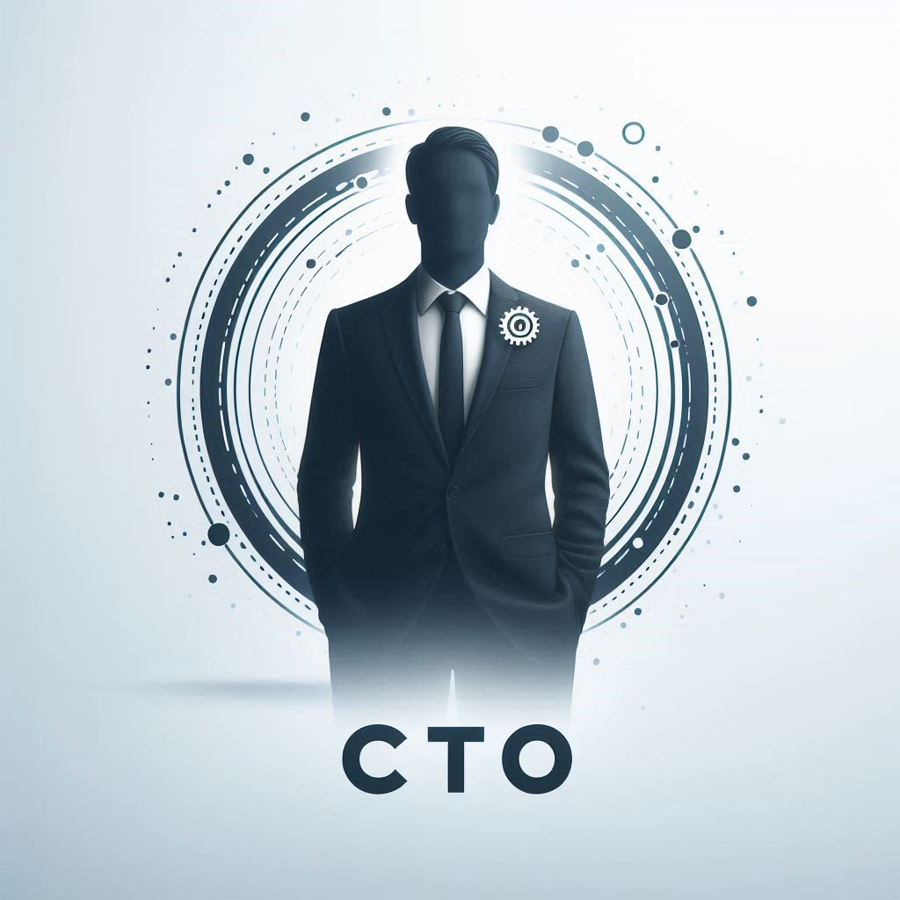

Это стартап — начало большого пути! В данный момент ограничены финансовые ресурсы, но здесь полно энтузиазма и идей. Ищу энтузиастов, готовых вложить свое время и энергию в это дело!
Поиск Команды
*Тут необходимо написать мотивация, что это путешествие, приключение, сказка и прочее*
Советую для начала изучить Продолжение... (et Nota).
Если ты понял суть проекта и/или очень сильно заинтересован в нём и ЗНАЕШЬ (что угодно) и МОЖЕШЬ (чем угодно) помочь в его реализации, то ты подходишь.
А если в добавок к этому ещё и разделяешь взгляды et Human — идеально подходишь!
Некоторые моменты для уточнения:
Каждая названная роль не есть фиксированной и будет уточняться.
Ни единая неназванная роль не является умышленно опущенной и/или ненужной.
Если ты можешь принести (приносишь) пользу стартапу, но не занимаешь одну из названных ролей, то это означает, что твоя роль не была названа.
Роли могут пересекаться в одном человеке.
Каждая роль может заниматься и более, чем одним человеком.
CTO

Описание:
Ты визионер и техноэнтузиаст, готовый создать что-то невероятное с нуля? Ты хочешь работать в стартап-среде, где инновации сочетаются с возможностями? Присоединяйся к нам в роли Chief Technology Officer (CTO) и стань движущей силой нашего амбициозного пути!
Как CTO, ты будешь:
Вести разработку: Руководить созданием нашего минимально жизнеспособного продукта (MVP), превращая идеи в функциональное и удобное мобильное приложение.
Техническое видение: Определять функциональные требования MVP и разрабатывать техническую стратегию для их реализации.
Технологический стек: Выбирать технологические платформы и инструменты, на которых будет базироваться наш продукт.
Управление командой: Строить и управлять нашей технической командой, привлекая талантливых разработчиков.
Строить и масштабировать: Масштабировать продукт после запуска MVP, улучшать функциональность и обеспечивать надежную архитектуру для будущего роста.
Вдохновлять и инновационно мыслить: Вносить инновационные идеи, мотивировать команду и продвигать технологические решения вперед.
Сотрудничать и наставлять: Тесно сотрудничать с основателями и другими членами команды, создавать культуру сотрудничества и наставлять младших разработчиков.
Кто ты:
Технический эксперт: Глубокое понимание разработки мобильных приложений, опыт работы с различными технологиями и фреймворками.
Инновационный мыслитель: Страсть к технологиям, способность превращать креативные идеи в реальность.
Проблемный решатель: Умение выявлять проблемы и предлагать эффективные технические решения.
Командный игрок: Готовность к сотрудничеству, отличные коммуникационные навыки и способность мотивировать команду.
Желательные навыки и опыт:
Техническая компетентность: Опыт в разработке мобильных приложений (iOS/Android), знание кроссплатформенных решений приветствуется.
Опыт в руководстве: Желание и опыт в управлении техническими командами.
Стратегическое мышление: Умение адаптировать технические стратегии под бизнес-цели и обеспечивать их успешную реализацию.
Искусственный интеллект: Успешный опыт внедрения ИИ-технологий в мобильные приложения, включая машинное и глубокое обучение.
Большие данные (Big Data): Профессиональные навыки работы с большими данными, их анализом и обработкой. Опыт использования платформ для хранения и анализа больших данных.
Безопасность: Глубокое понимание и практический опыт обеспечения безопасности в мобильных приложениях, включая защиту данных пользователей и соблюдение конфиденциальности.
Почему стоит присоединиться:
Влияние на результат: Твоя работа будет иметь прямое влияние на успех продукта и развитие компании.
Инновационная среда: Возможность работать в культуре, где ценится креативность, сотрудничество и постоянное обучение.
Возможность стать совладельцем: Как ранний участник команды, ты получишь возможность зарабатывать долю в компании и делиться её успехом.
Гибкость и автономия: Возможность экспериментировать, внедрять инновации и влиять на технологическое будущее компании.
Ты завзятый программист, который хочет внести свой вклад в создание инновационного продукта? Ищешь динамичную среду стартапа, где твои идеи и навыки будут востребованы? Присоединяйся к команде в роли программиста и помоги воплотить в жизнь амбициозные планы!
Как программист, ты будешь:
Разрабатывать и внедрять: Создавать код для нашего мобильного приложения, обеспечивая его функциональность и надежность.
Фронтенд и бэкенд: Работать как с клиентской, так и с серверной частью приложения, обеспечивая их гармоничное взаимодействие.
Оптимизация и тестирование: Проводить оптимизацию кода и тестирование для обеспечения высокого качества продукта.
Интеграция с API: Реализовывать интеграции с внешними сервисами и API для расширения функционала приложения.
Сотрудничать с командой: Работать в тесном взаимодействии с дизайнером и CTO для реализации дизайна и технической стратегии.
Обучаться и развиваться: Постоянно совершенствовать свои навыки и изучать новые технологии для повышения эффективности работы.
Кто ты:
Технический эксперт: У тебя есть опыт разработки мобильных приложений и владение современными языками программирования.
Проблемно-ориентированный: Ты умеешь находить и устранять проблемы в коде, обеспечивая его стабильность и производительность.
Командный игрок: Ты готов работать в команде, делиться своими идеями и прислушиваться к мнению других.
Желающий учиться: Ты стремишься постоянно учиться и развиваться, осваивая новые технологии и методы разработки.
Желательные навыки и опыт:
Опыт разработки мобильных приложений: Практический опыт разработки приложений для iOS и Android.
Фулстек разработка: Знание как фронтенд, так и бэкенд технологий.
Интеграция с API: Опыт работы с RESTful API и другими внешними сервисами.
Инструменты разработки: Знание инструментов и методов, таких как, например, Git, CI/CD, Docker и др.
Искусственный интеллект: Опыт работы с ИИ-технологиями и их интеграцией в мобильные приложения. Знание машинного обучения и глубокого обучения.
Большие данные (Big Data): Навыки работы с большими данными, их анализом и обработкой. Опыт работы с платформами для хранения и анализа больших данных.
Безопасность: Глубокое понимание аспектов безопасности в мобильных приложениях, включая защиту данных пользователей и обеспечение конфиденциальности.
Почему стоит присоединиться:
Влияние на продукт: Твоя работа будет напрямую влиять на успех продукта и удовлетворенность пользователей.
Инновационная среда: Присоединяйся к команде, которая ценит креативность, сотрудничество и постоянное обучение.
Возможности получения доли в компании: Как ранний член команды, ты получишь шанс заработать долю и участвовать в успехе компании.
Гибкость и автономия: Наслаждайся свободой экспериментировать, внедрять свои идеи и влиять на будущее наших технологий.
Ты увлеченный маркетолог, готовый помочь стартапу достичь своих амбициозных целей? Ищешь возможность работать в динамичной среде, где твои идеи могут иметь непосредственное влияние? Присоединяйся к команде в роли маркетолога и помоги продвинуть продукт на рынок!
Как маркетолог, ты будешь:
Разрабатывать маркетинговую стратегию: Создавать и внедрять маркетинговые планы для продвижения мобильного приложения.
Анализ рынка: Исследовать рынок, конкурентов и целевую аудиторию для выявления возможностей и угроз.
Создание контента: Разрабатывать креативные материалы и кампании для привлечения и удержания пользователей.
SMM и SEO: Управлять нашими социальными медиа и оптимизировать контент для улучшения видимости в поисковых системах.
Сотрудничать с командой: Работать в тесном взаимодействии с дизайнером и разработчиками для согласования маркетинговых усилий с продуктовой стратегией.
Измерять и анализировать: Использовать аналитику и метрики для оценки эффективности маркетинговых кампаний и внесения улучшений.
Кто ты:
Маркетолог-новатор: Ищем творческого человека, который готов учиться и применять новые подходы в маркетинге. Опыт приветствуется, но главное — твоя готовность расти вместе с нами и делиться свежими идеями.
Аналитически подкованный: Ты умеешь анализировать данные и принимать обоснованные решения на их основе.
Коммуникатор: Ты умеешь четко и эффективно передавать свои идеи и концепции как внутри команды, так и для внешней аудитории.
Командный игрок: Ты готов работать в команде, делиться своими идеями и прислушиваться к мнению других.
Желательные навыки и опыт:
Управление социальными медиа: Опыт работы с социальными медиа платформами и инструментами аналитики.
SEO и контент-маркетинг: Знание лучших практик SEO и создание контента, оптимизированного для поисковых систем.
Аналитические инструменты: Опыт работы с инструментами аналитики, такими как, например, Google Analytics, и использование данных для принятия решений.
Почему стоит присоединиться:
Влияние на продукт: Твои маркетинговые усилия будут напрямую влиять на успех продукта и его позиционирование на рынке.
Инновационная среда: Присоединяйся к команде, которая ценит креативность, сотрудничество и постоянное обучение.
Возможности получения доли в компании: Как ранний член команды, ты получишь шанс заработать долю и участвовать в успехе компании.
Гибкость и автономия: Наслаждайся свободой экспериментировать, внедрять свои идеи и влиять на будущее наших маркетинговых стратегий.
Ты талантливый дизайнер, стремящийся создать уникальный и запоминающийся пользовательский опыт? Ищешь возможность работать в динамичной стартап-среде, где твои идеи могут воплотиться в жизнь? Присоединяйся к команде в роли дизайнера и помоги создать продукт, который будет восхищать пользователей!
Как дизайнер, ты будешь:
Создавать дизайн: Разрабатывать интуитивно понятные и привлекательные пользовательские интерфейсы для нашего мобильного приложения.
UI/UX дизайн: Проектировать интерфейсы, обеспечивающие удобство и эстетику, учитывая потребности и ожидания пользователей.
Прототипирование: Создавать интерактивные прототипы для тестирования и демонстрации функционала.
Визуальный дизайн: Разрабатывать визуальные элементы, такие как иконки, иллюстрации и графику, соответствующие общему стилю приложения.
Сотрудничать с командой: Работать в тесном сотрудничестве с разработчиками и CTO для реализации дизайна в конечном продукте.
Исследовать и улучшать: Проводить исследования пользователей, собирать обратную связь и вносить улучшения в дизайн на основе данных.
Кто ты:
Креативный профессионал: У тебя есть портфолио, демонстрирующее твой опыт и креативность в области дизайна.
Пользовательски ориентированный: Ты умеешь думать с точки зрения пользователя и создавать дизайн, который отвечает их потребностям.
Командный игрок: Ты готов сотрудничать с другими членами команды, делиться своими идеями и прислушиваться к их мнению.
Технически подкованный: Ты знаком с современными инструментами и методами дизайна, такими как Sketch, Figma, Adobe Creative Suite и др.
Желательные навыки и опыт:
Опыт в UI/UX дизайне: Практический опыт разработки пользовательских интерфейсов и улучшения пользовательского опыта.
Прототипирование: Умение создавать интерактивные прототипы для тестирования и презентации.
Веб и мобильный дизайн: Опыт работы с дизайном для мобильных приложений и веб-платформ.
Коммуникационные навыки: Способность четко и эффективно передавать свои идеи и концепции.
Почему стоит присоединиться:
Влияние на продукт: Твой дизайн будет определять пользовательский опыт и визуальную идентичность продукта.
Инновационная среда: Присоединяйся к команде, которая ценит креативность, сотрудничество и постоянное обучение.
Возможности получения доли в компании: Как ранний член команды, ты получишь шанс заработать долю и участвовать в успехе компании.
Гибкость и автономия: Наслаждайся свободой экспериментировать, внедрять свои идеи и влиять на будущее наших технологий.
Ты подкованный финансист, готовый помочь стартапу эффективно управлять ресурсами и достигать финансовых целей? Ищешь возможность работать в динамичной среде, где твои идеи и навыки будут востребованы? Присоединяйся к нашей команде в роли CFO и помоги нам построить устойчивую финансовую основу для нашего бизнеса!
Как CFO, ты будешь:
Управлять финансами: Разрабатывать и внедрять финансовую стратегию, управлять бюджетом и финансовыми потоками компании.
Бюджетирование и прогнозирование: Создавать бюджеты, прогнозировать доходы и расходы, контролировать выполнение финансовых планов.
Финансовая отчетность: Подготавливать финансовые отчеты, анализировать финансовые показатели и предоставлять рекомендации по улучшению.
Поиск инвестиций: Работать над привлечением инвестиций, разрабатывать инвестиционные предложения и презентации.
Сотрудничать с командой: Работать в тесном взаимодействии с другими руководителями и основателем для согласования финансовой стратегии с общей стратегией компании.
Контролировать риски: Оценивать финансовые риски, разрабатывать стратегии их минимизации и обеспечивать соблюдение финансовых регламентов.
Кто ты:
Финансовый эксперт: Ты владеешь компетенциями в сфере финансового управления предприятием (в том числе таким венчурным, как стартап) и имеешь продвинутое понимание финансовых механизмов.
Стратегический мыслитель: Ты умеешь разрабатывать и внедрять финансовые стратегии, которые способствуют росту и развитию бизнеса.
Аналитически подкованный: Ты умеешь анализировать данные и принимать обоснованные решения на их основе.
Командный игрок: Ты готов работать в команде, делиться своими идеями и прислушиваться к мнению других.
Желательные навыки и опыт:
Талант в финансовом управлении: Исключительные способности и глубокие знания в роли финансиста, особенно ценные в IT и стартап-секторе, опыт приветствуется.
Бюджетирование и прогнозирование: Продвинутые навыки в составлении бюджетов и финансовых прогнозов, а также в управлении ими.
Финансовая отчетность: Глубокое понимание стандартов и методик финансовой отчетности.
Привлечение инвестиций: Умение эффективно взаимодействовать с инвесторами и создавать убедительные инвестиционные предложения и презентации.
Почему стоит присоединиться:
Влияние на бизнес: Твои финансовые решения будут напрямую влиять на успех компании и ее развитие.
Инновационная среда: Присоединяйся к команде, которая ценит креативность, сотрудничество и постоянное обучение.
Возможности получения доли в компании: Как ранний член команды, ты получишь шанс заработать долю и участвовать в успехе компании.
Гибкость и автономия: Наслаждайся свободой экспериментировать, внедрять свои идеи и влиять на будущее нашей финансовой стратегии.
Ты опытный и/или понимающий своё дело юрист, специализирующийся на вопросах, связанных со стартапами и технологическими компаниями? Ищешь возможность влиять на правовую стратегию и обеспечивать юридическую поддержку на всех этапах развития бизнеса? Присоединяйся к нашей команде в роли юриста и помоги нам строить юридическую основу для стартапа!
Как юрист, ты будешь:
Юридическая поддержка: Оказывать консультации по юридическим вопросам, связанным с деятельностью стартапа.
Составление документации: Готовить и анализировать юридические документы, включая договоры, лицензии и соглашения.
Работа с интеллектуальной собственностью: Защищать права интеллектуальной собственности компании, оформлять патенты и торговые марки.
Риск-менеджмент: Оценивать и управлять юридическими рисками, разрабатывать стратегии их минимизации.
Сотрудничать с командой: Взаимодействовать с другими членами команды для согласования бизнес- и юридических стратегий.
Соблюдение законодательства: Обеспечивать соответствие деятельности компании действующему законодательству и нормативным актам.
Кто ты:
Опытный специалист: У тебя есть опыт работы в области корпоративного и технологического права.
Аналитический склад ума: Ты способен анализировать сложные юридические вопросы и предлагать практические решения.
Коммуникативные навыки: Ты умеешь ясно и четко излагать свои мысли и работать в команде.
Ответственность: Ты готов нести ответственность за юридические аспекты деятельности компании.
Желательные навыки и опыт:
Специализация в технологическом праве: Знание особенностей юридического регулирования в IT-сфере.
Опыт работы со стартапами: Понимание специфики юридического обеспечения стартап-проектов.
Опыт в интеллектуальной собственности: Знание процедур регистрации и защиты прав интеллектуальной собственности.
Почему стоит присоединиться:
Значимость роли: Твоя работа будет иметь важное значение для защиты интересов компании и обеспечения ее юридической устойчивости.
Развитие профессиональных навыков: Участвуй в развитии высокотехнологичной среды, где каждый день приносит новые юридические вызовы.
Возможности для карьерного роста: Как часть молодой и амбициозной команды, ты сможешь активно влиять на будущее компании и свою карьеру.
Гибкость и автономия: Наслаждайся свободой внедрять свои идеи, разрабатывать юридические стратегии и влиять на развитие бизнеса.